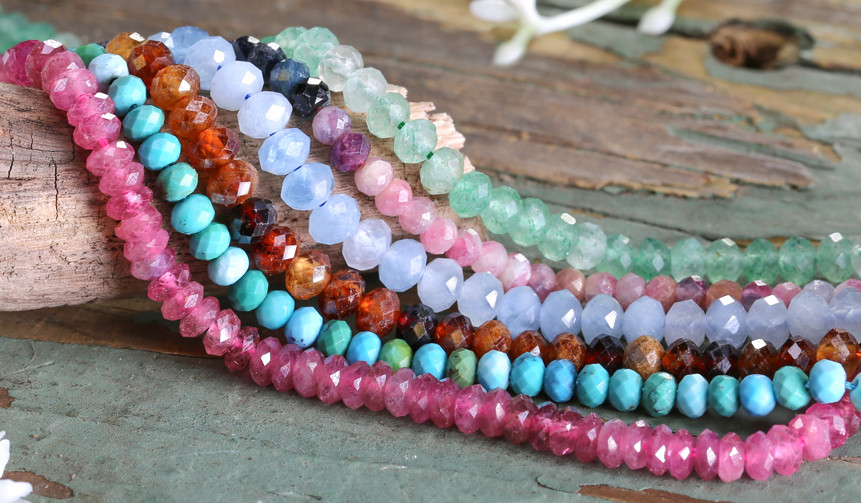

I love ducks because they are such cute and kind looking animals. Here are some fun facts:
I love ducks because they are such cute and kind looking animals. Here are some fun facts:
I really enjoy making jewelry as a past-time because it's a very fun and cuztomizable hobby. I start by drawing a sketch of what I vision and then choose the correct beads to bring my vision to life!

Ducks are my favourite animals.
I love ducks because they are such cute and kind looking animals. Here are some fun facts:

I love watching movies and finding out about different timelines as well analyzing plots of different styled movies. I like watching movies at home but watching new movies in the theatres will always be superior.